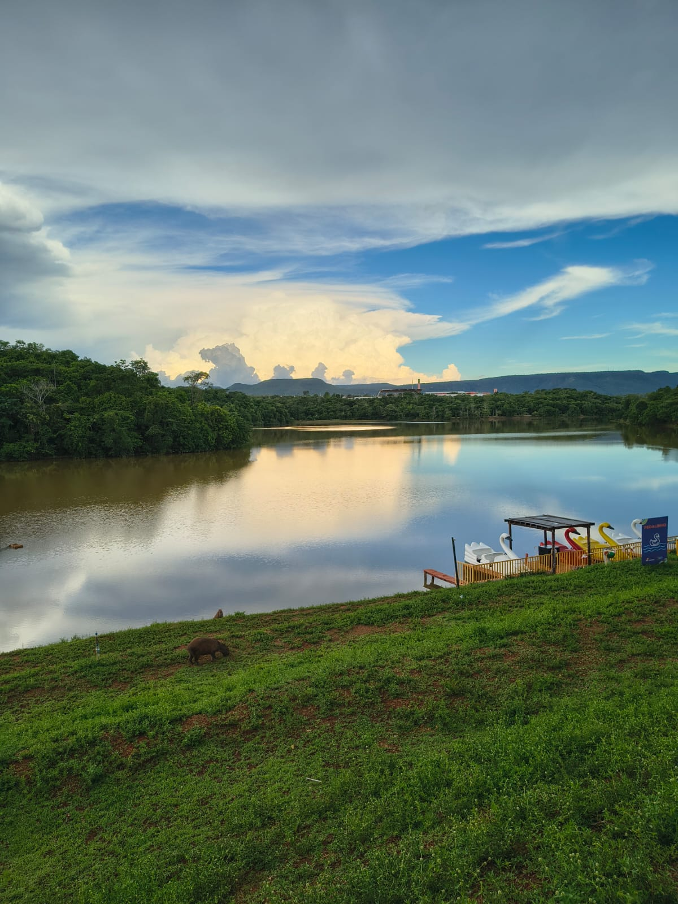

O que eu mais gosto em Palmas
Avenida Tocantins

A Avenida Tocantins é um lugar maravilhoso onde eu esgoto o meu resto de sálario, e as vezes eu vou só pra acompanhar alguém OU ajudar em alguma coisa.
Praia da Graciosa

A Praia da Graciosa é um lugar muito lindo, principalmente no pôr do sol é um espetáculo de balezura, é como entrar dentro de uma obra de arte.
Parque Cesamar

O Parque cesamar é um lugar otimo, seja para caminhadas, pequinique ou até mesmo só pra sair de caminhadas lá é um lugar mais recomendado para lazer e se conectar com a natureza.